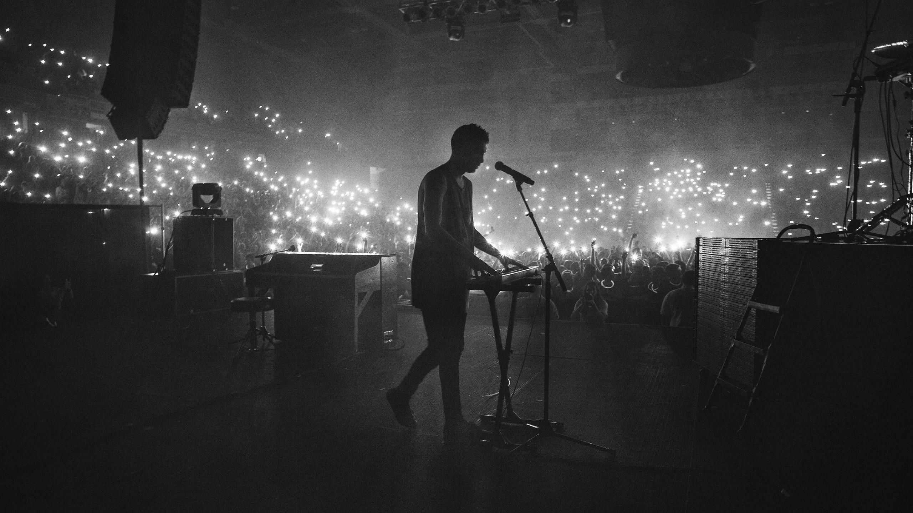
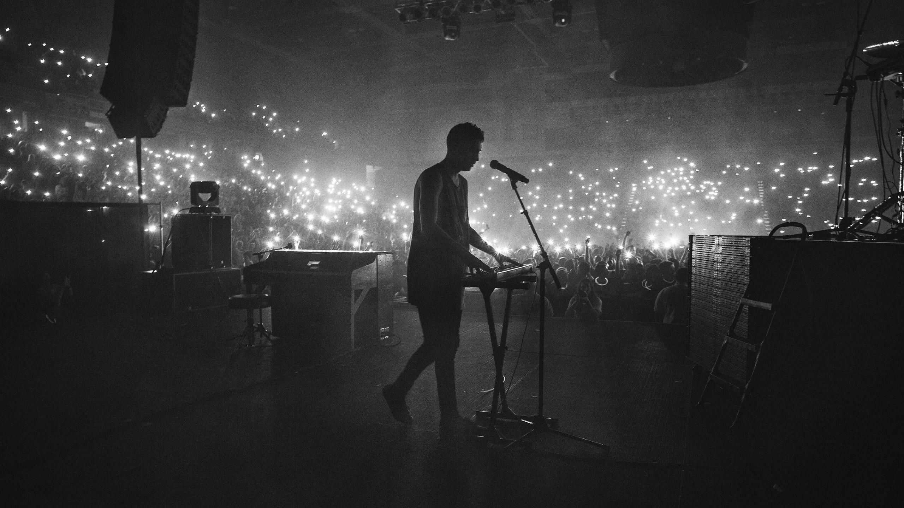

Hola soy "Lourdes Cuy"
Tengo "16" años
¿Quien soy?
En conclusión, soy una jovencita de 16 años que mide 1.63 metros (Eduardo dice que 1.50 pero miente) que ama el deporte, la química y el color verde. De cuerpo mediano, cabello ondulado y de piel morena, insegura, pero con confianza para afrontar lo que se venga, optimista y melancólica en ocasiones, inteligente, generosa y de buen corazón. Mi mas grande sueño es poder hacer el mundo un lugar mejor espero lograrlo con mis propósitos, tengo miedo del futuro y eso no me hace débil me hace humana. Soy risa, soy tristeza, soy las aventuras que he tenido, soy cada partícula que me conforma. Antes de irme mis objetivos principales son ayudar a las personas con mis conocimientos y dejar en ellas lo que fui entrar en ellas y sanarlas entenderlas y amarlas. Podrá ser egoísta lo que diré pero quiero que me extrañen y me recuerden con alegría pero que a la vez suelten una que otra lagrimita para así yo saber que hice un buen trabajo con mi vida. Soy la melodía de un piano que resuena en un conservatorio pero a la vez la guitarra que inunda mis oídos cada vez que la toco. Soy lo que predico, soy paz y tranquilidad. Me gusta ser quién soy.
 
Mi página web favorita

Mi página web favorita